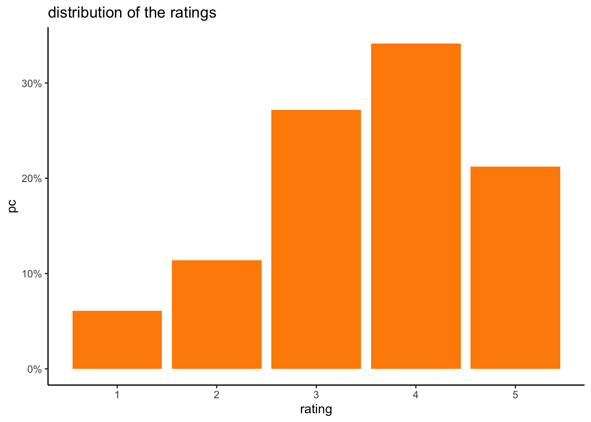
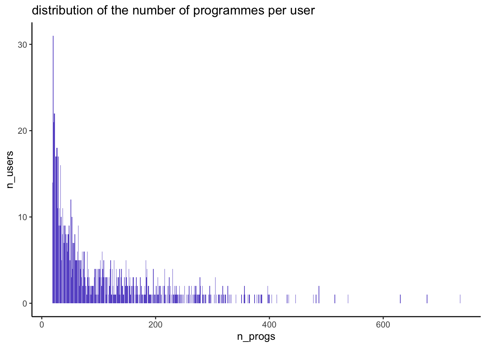

suppressPackageStartupMessages(library(tidyverse))
library(recommenderlab) # to use the MovieLense dataset
library(janitor) # to use the clean_names function
library(visNetwork) # to create the network graph
options(java.parameters = c("-XX:+UseConcMarkSweepGC", "-Xmx32g"))
gc()
theme_set(theme_classic()) # sets the ggplot theme for the session
options(scipen = 999) # so that numbers don't display with the exponent
options(dplyr.summarise.inform = FALSE) # to suppress annoying grouping warningIn the age of expanding online catalogue availability, recommendation engines were developed to help find the most relevant content for users. These rely on large datasets of users interactions with items, for example viewers history on subscription online video platforms such as Netflix. The most commonly used approaches are based on collaborative filtering using matrix factorization such as ALS, see (Zhou et al. 2008).
In this post, we will see how we can calculate association between programmes using a different approach based on Market Basket Analysis, and how we can visualise the results with Network Graphs.
1 a quick review of Market Basket Analysis
As the name suggests, this approach was developed to understand what people tend to buy together on a shopping trip, i.e. what ends up in their groceries baskets. By finding sets of items that are often bought together, a physical store can re-arrange their layout and place frequent item sets in close proximity.
By extension, the same applies to online stores in the form of prompted recommendations, such as “people who bought this item also bought…”.
For a full explanation of this topic using R’s arules package, please check (Hornik 2005).
Market Basket metrics are derived from measuring conditional probabilities. In the simple setting of just looking at pairs of items (itemset size = 2), if we have items A and B, for example eggs and bacon, then:
- \(\text{support} = P(A \text{AND} B)\) = joint probability.
- \(\text{confidence} = P(B/A)\) = conditional probability.
- \(\text{lift} = P(A \text{AND} B)/[P(A)*P(B)]\) = deviation from independent probabilities.
Both the support and the lift are symmetrical measures: support(A,B) = support(B,A). However the confidence is not symmetrical.
The lift can take any values between \(] -\infty, +\infty[\).
A lift of 1 means there is no association, the 2 events are independent.
A lift < 1 means there is a negative association between the 2 events: buying one makes you less likely to buy the other.
A lift > 1 means there is a positive association between the 2 events: buying one makes you more likely to buy the other.
2 applying to the MovieLense dataset
To demonstrate how to find films that are strongly associated, we will use the MovieLense dataset that is made available in the R package recommenderlab. It contains about 100,000 ratings from 943 users on 1664 movies.
2.1 preparing the dataset
data("MovieLense")
str(MovieLense)Formal class 'realRatingMatrix' [package "recommenderlab"] with 2 slots
..@ data :Formal class 'dgCMatrix' [package "Matrix"] with 6 slots
.. .. ..@ i : int [1:99392] 0 1 4 5 9 12 14 15 16 17 ...
.. .. ..@ p : int [1:1665] 0 452 583 673 882 968 994 1386 1605 1904 ...
.. .. ..@ Dim : int [1:2] 943 1664
.. .. ..@ Dimnames:List of 2
.. .. .. ..$ : chr [1:943] "1" "2" "3" "4" ...
.. .. .. ..$ : chr [1:1664] "Toy Story (1995)" "GoldenEye (1995)" "Four Rooms (1995)" "Get Shorty (1995)" ...
.. .. ..@ x : num [1:99392] 5 4 4 4 4 3 1 5 4 5 ...
.. .. ..@ factors : list()
..@ normalize: NULLThe data is stored as a realRatingMatrix object so we first turn it into a dataframe:
films_rld <- summary(MovieLense@data) %>% as.data.frame()
names(films_rld) <- c("user_id", "film_id", "rating")
head(films_rld) user_id film_id rating
1 1 1 5
2 2 1 4
3 5 1 4
4 6 1 4
5 10 1 4
6 13 1 3n_users <- n_distinct(films_rld$user_id)
films_rld %>%
summarise(
n_rows = n(),
n_users = n_distinct(user_id),
n_progs = n_distinct(film_id)
) n_rows n_users n_progs
1 99392 943 1664Let’s keep the films id and name in a separate dataset:
film_ids <- data.frame(
id = 1:length(unlist(MovieLense@data@Dimnames[2]) ),
name = unlist(MovieLense@data@Dimnames[2])
)
head(film_ids) id name
1 1 Toy Story (1995)
2 2 GoldenEye (1995)
3 3 Four Rooms (1995)
4 4 Get Shorty (1995)
5 5 Copycat (1995)
6 6 Shanghai Triad (Yao a yao yao dao waipo qiao) (1995)The top ten most watched films are:
films_rld %>%
group_by(film_id) %>%
summarise(reach = n()) %>%
arrange(desc(reach)) %>%
head(10) %>%
left_join(
film_ids %>%
rename(film_id = id),
by = "film_id"
) %>%
select(name, film_id, reach)# A tibble: 10 × 3
name film_id reach
<chr> <int> <int>
1 Star Wars (1977) 50 583
2 Contact (1997) 258 509
3 Fargo (1996) 100 508
4 Return of the Jedi (1983) 181 507
5 Liar Liar (1997) 293 485
6 English Patient, The (1996) 285 481
7 Scream (1996) 287 478
8 Toy Story (1995) 1 452
9 Air Force One (1997) 299 431
10 Independence Day (ID4) (1996) 121 429Let’s check the distribution of ratings and of the number of items per user:
films_rld %>%
group_by(rating) %>%
summarise(n = n()) %>%
mutate(pc = n / sum(n)) %>%
ggplot(aes(x = rating, y = pc)) +
geom_bar(stat = "identity", fill = "darkorange") +
scale_y_continuous(labels = scales::percent) +
labs(title = "distribution of the ratings")
Judging from the distribution of ratings, we’ll take ratings = 4 or 5 to indicate a positive rating.
temp <- films_rld %>%
group_by(user_id) %>%
summarise(n_progs = n())
temp %>%
group_by(n_progs) %>%
summarise(n_users = n()) %>%
ggplot(aes(x = n_progs, y = n_users)) +
geom_bar(stat = "identity", fill = "slateblue") +
labs(title = "distribution of the number of programmes per user")
summary(temp$n_progs) Min. 1st Qu. Median Mean 3rd Qu. Max.
19.0 32.0 64.0 105.4 147.5 735.0 In this dataset each user has rated at least 19 films, and up to 735.
Let’s filter the dataset based on ratings \(\ge\) 4.
films_rld <- films_rld %>%
filter(rating >= 4)
films_rld %>%
summarise(
n_rows = n(),
n_users = n_distinct(user_id),
n_progs = n_distinct(film_id)
) n_rows n_users n_progs
1 55024 942 1433By removing negative ratings, we are left with about 55k interactions.
The MovieLenseMeta dataset contains the film genres but each film can have more than one:
film_genres <- MovieLenseMeta %>%
select(-year, -url, -unknown) %>%
clean_names() %>%
mutate(id = row_number()) %>%
# bring all the genres together into one string:
unite("genre", action:western, remove = FALSE) %>%
pivot_longer(action:western) %>%
filter(value == 1) %>%
select(-value) %>%
group_by(id, title, genre) %>%
summarise(genres = str_c(name, collapse = ", "))
head(film_genres)# A tibble: 6 × 4
# Groups: id, title [6]
id title genre genres
<int> <chr> <chr> <chr>
1 1 Toy Story (1995) 0_0_1_1_1_0… anima…
2 2 GoldenEye (1995) 1_1_0_0_0_0… actio…
3 3 Four Rooms (1995) 0_0_0_0_0_0… thril…
4 4 Get Shorty (1995) 1_0_0_0_1_0… actio…
5 5 Copycat (1995) 0_0_0_0_0_1… crime…
6 6 Shanghai Triad (Yao a yao yao dao waipo qiao) (1995) 0_0_0_0_0_0… drama 2.2 calculating the lift
We can now calculate the lift between all pairs of films. Recall that the lift measures the deviation from the assumption of independence, so to calculate the lift between films A and B, we will need:
\(P(A)=\cfrac{\text{\# of users who watched A}}{\text{\# of users}}\)
\(P(B)=\cfrac{\text{\# of users who watched B}}{\text{\# of users}}\)
\(P(A \cap B)=\cfrac{\text{\# of users who watched A AND B}}{\text{\# of users}}\)
As we have 1433 films, this leads to 1433 * 1432 / 2 = 1,026,028 possible pairs of distinct items.
all_pairs_summary <- films_rld %>%
rename(item1 = film_id) %>%
select(user_id, item1) %>%
full_join(
films_rld %>%
rename(item2 = film_id) %>%
select(user_id, item2),
by = "user_id",
relationship = "many-to-many"
) %>%
group_by(item1, item2) %>%
summarise(
n = n(),
pc = n / n_users
) %>%
ungroup()
head(all_pairs_summary)# A tibble: 6 × 4
item1 item2 n pc
<int> <int> <int> <dbl>
1 1 1 321 0.340
2 1 2 30 0.0318
3 1 3 19 0.0201
4 1 4 64 0.0679
5 1 5 24 0.0255
6 1 6 7 0.00742The first entry is simply the reach of item 1, then for item1 != item2, this shows the joint reach of the 2 items, i.e. the support. We can now calculate the confidence = P(B/A):
all_pairs_summary <- all_pairs_summary %>%
# add n1:
left_join(
all_pairs_summary %>%
filter(item1 == item2) %>%
rename(n1 = n) %>%
select(item1, n1),
by = "item1"
) %>%
# add n2:
left_join(
all_pairs_summary %>%
filter(item1 == item2) %>%
rename(n2 = n) %>%
select(item2, n2),
by = "item2"
) %>%
# confidence(A, B) = P(B / A)
mutate(
confidenceAB = n / n1,
confidenceBA = n / n2
)
head(all_pairs_summary)# A tibble: 6 × 8
item1 item2 n pc n1 n2 confidenceAB confidenceBA
<int> <int> <int> <dbl> <int> <int> <dbl> <dbl>
1 1 1 321 0.340 321 321 1 1
2 1 2 30 0.0318 321 51 0.0935 0.588
3 1 3 19 0.0201 321 34 0.0592 0.559
4 1 4 64 0.0679 321 122 0.199 0.525
5 1 5 24 0.0255 321 39 0.0748 0.615
6 1 6 7 0.00742 321 15 0.0218 0.467and the lift = P(A AND B) / ( P(A)*P(B) ):
all_pairs_summary <- all_pairs_summary %>%
left_join(
# item1:
all_pairs_summary %>%
filter(item1 == item2) %>%
rename(pc1 = pc) %>%
select(item1, pc1),
by = "item1"
) %>%
left_join(
# item2:
all_pairs_summary %>%
filter(item1 == item2) %>%
rename(pc2 = pc) %>%
select(item2, pc2),
by = "item2"
) %>%
# remove trivial cases of pair of same item:
filter(item1 != item2) %>%
mutate(
indep_prob = pc1 * pc2,
lift = pc / (pc1 * pc2)
) %>%
rename(support = pc)
head(all_pairs_summary)# A tibble: 6 × 12
item1 item2 n support n1 n2 confidenceAB confidenceBA pc1 pc2
<int> <int> <int> <dbl> <int> <int> <dbl> <dbl> <dbl> <dbl>
1 1 2 30 0.0318 321 51 0.0935 0.588 0.340 0.0541
2 1 3 19 0.0201 321 34 0.0592 0.559 0.340 0.0361
3 1 4 64 0.0679 321 122 0.199 0.525 0.340 0.129
4 1 5 24 0.0255 321 39 0.0748 0.615 0.340 0.0414
5 1 6 7 0.00742 321 15 0.0218 0.467 0.340 0.0159
6 1 7 141 0.150 321 263 0.439 0.536 0.340 0.279
# ℹ 2 more variables: indep_prob <dbl>, lift <dbl>How to read this? Looking at the first row:
30 users have liked both items 1 and 2. Amongst all 943 users, this is a joint reach of 3.2%.
321 users have liked item 1 (n1). Amongst those, 30 have liked item 2, therefore the confidence on that side is 30 / 321 = 9.35%.
51 users have liked item 2 (n2). Amongst those, 30 have liked item 2, therefore the confidence on that side is 30 / 51 = 58.82%.
the reach of item 1 is 34.04% and the reach of item 2 is 5.4%, so if both were independent, the probability of liking both would be 34.04% x 5.4% = 1.84%, however we observed this joint probability to be 3.2% (i.e. the support), therefore the lift is 3.2% / 1.84% = 1.72, in other words people who like item 1 are 1.72 times more likely to like item 2 and vice versa.
As some cells have low number of observations, it’s best to set a threshold when analysing the results, for example n = 50. Let’s see the pairs of films that are most strongly associated:
all_pairs_summary %>%
filter(n1 >= 50, n2 >= 50) %>%
# only keep one side of the pairs:
filter(item1 < item2) %>%
arrange(desc(lift)) %>%
head(10) %>%
# add film title for item 1:
left_join(
film_ids %>%
rename(
item1 = id,
film1 = name
),
by = "item1"
) %>%
# add film title for item 2:
left_join(
film_ids %>%
rename(
item2 = id,
film2 = name
),
by = "item2"
) %>%
select(film1, film2, lift)# A tibble: 10 × 3
film1 film2 lift
<chr> <chr> <dbl>
1 Pinocchio (1940) Dumbo (1941) 9.17
2 Die Hard 2 (1990) Die Hard: With … 9.13
3 Star Trek III: The Search for Spock (1984) Star Trek: Gene… 8.37
4 Wrong Trousers, The (1993) Grand Day Out, … 8.30
5 Grand Day Out, A (1992) Close Shave, A … 8.18
6 Die Hard 2 (1990) Under Siege (19… 8.13
7 Wallace & Gromit: The Best of Aardman Animation (1996) Grand Day Out, … 7.88
8 Madness of King George, The (1994) Bullets Over Br… 7.42
9 GoldenEye (1995) Die Hard: With … 7.28
10 Cinderella (1950) Dumbo (1941) 7.27This makes perfect sense: people who liked Pinocchio are 9 times more likely to also like Dumbo etc.
Check the films that are most strongly associated with Toy Story:
toy_story_top10 <- all_pairs_summary %>%
filter(n1 >= 50, n2 >= 50) %>%
# only keep Toy Story:
filter(item1 == 1) %>%
arrange(desc(lift)) %>%
head(10) %>%
# add film title for item 1:
left_join(
film_ids %>%
rename(
item1 = id,
film1 = name
),
by = "item1"
) %>%
# add film title for item 2:
left_join(
film_ids %>%
rename(
item2 = id,
film2 = name
),
by = "item2"
)
toy_story_top10 %>%
select(film1, film2, lift)# A tibble: 10 × 3
film1 film2 lift
<chr> <chr> <dbl>
1 Toy Story (1995) Cinderella (1950) 2.38
2 Toy Story (1995) Dumbo (1941) 2.36
3 Toy Story (1995) Winnie the Pooh and the Blustery Day (1968) 2.20
4 Toy Story (1995) Pinocchio (1940) 2.19
5 Toy Story (1995) Beauty and the Beast (1991) 2.15
6 Toy Story (1995) Mars Attacks! (1996) 2.14
7 Toy Story (1995) Aladdin (1992) 2.06
8 Toy Story (1995) Frighteners, The (1996) 2.06
9 Toy Story (1995) Beavis and Butt-head Do America (1996) 2.06
10 Toy Story (1995) Grand Day Out, A (1992) 2.05The top 10 films most strongly associated with Toy Story are all as we would expect, mostly Disney animation films and films for children.
2.3 visualisation with network graph
To create an interactive visualisation of the top 10 programmes most strongly associated with Toy Story, we can use R’s package visNetwork.
First we prepare the nodes dataframe, which needs at least the columns id and label, and optionally the columns size, title and color.
# use a scaling factor so the graph displays ok:
scaling_factor <- 10
# define set of colours that work with visNetwork:
my_cols <- c(
"coral", "cornflowerblue","darkblue", "darkcyan",
"hotpink", "darkgreen", "darkkhaki", "darkmagenta",
"darkolivegreen", "darkorange", "springgreen", "steelblue",
"thistle", "tomato", "turquoise", "maroon", "wheat", "yellow", "yellowgreen")
# for the nodes we need an id, label and size columns:
my_nodes <- rbind(
# toy story:
toy_story_top10 %>%
select(item1, film1) %>%
distinct() %>%
rename(
id = item1,
label = film1
),
# top 10 films most strongly associated:
toy_story_top10 %>%
select(item2, film2) %>%
rename(
id = item2,
label = film2
)
) %>%
# add reach per item using the dataset of positive ratings:
left_join(
films_rld %>%
rename(id = film_id) %>%
group_by(id) %>%
summarise(size = n()/scaling_factor),
by = "id"
) %>%
# add the film genres:
left_join(
film_genres,
by = "id"
) %>%
# add a title in html that will be displayed
# when hovering over the node:
mutate(
color = my_cols[as.numeric(as.factor(genre))],
title = paste0(
"<p><b>title = </b>", label,"<br>",
"<b>reach = </b>", size*scaling_factor, "<br>",
"<b>genres = </b>", genres,
"</p>")
)
my_nodes %>%
select(id, label, size, genres)# A tibble: 11 × 4
id label size genres
<int> <chr> <dbl> <chr>
1 1 Toy Story (1995) 32.1 animation, childrens…
2 415 Cinderella (1950) 6.8 animation, childrens…
3 497 Dumbo (1941) 6.1 animation, childrens…
4 961 Winnie the Pooh and the Blustery Day (1968) 5.2 animation, childrens
5 401 Pinocchio (1940) 5.9 animation, childrens
6 584 Beauty and the Beast (1991) 13.8 animation, childrens…
7 235 Mars Attacks! (1996) 5.9 action, comedy, sci_…
8 95 Aladdin (1992) 14.4 animation, childrens…
9 123 Frighteners, The (1996) 5 comedy, horror
10 240 Beavis and Butt-head Do America (1996) 5 animation, comedy
11 189 Grand Day Out, A (1992) 5.3 animation, comedy Next, we prepare the dataframe of edges which are the links between items. It needs at least the columns to and from referencing the item ids:
my_edges <- toy_story_top10 %>%
rename(
to = item2,
from = item1
) %>%
mutate(title = paste0("lift = ", round(lift, digits = 2))) %>%
select(to, from, title)
head(my_edges)# A tibble: 6 × 3
to from title
<int> <int> <chr>
1 415 1 lift = 2.38
2 497 1 lift = 2.36
3 961 1 lift = 2.2
4 401 1 lift = 2.19
5 584 1 lift = 2.15
6 235 1 lift = 2.14visNetwork(my_nodes, my_edges) %>%
visInteraction(navigationButtons = TRUE)The graph is dynamic:
- click on the nodes to get the number of users who liked the film, and the film’s genres.
- click on the edges to get the value of the lift.
- if 2 labels overlap, you can move around the nodes to see them better.
The size of the bubbles is proportional to the number of viewers and the colors correspond to the group of genres for each film.
3 conclusion
In this post we showed how we can find items that are liked by the same group of people using the Lift, a metric from Market Basket Analysis that measures the deviation from the assumption of independence. The Lift is an easy metric to explain: a lift of 3 means that people who liked item 1 are 3 times more likely to also like item 2 and vice versa.
Using Network Graphs we can display the results in a visually appealing way.
References
Hornik, Michael Hahsler, Bettina Grün, Kurt. 2005. “Arules – a Computational Environment for Mining Association Rules and Frequent Item Sets.” Journal of Statistical Software, 1–25. http://www.jstatsoft.org/v14/i15/.
Zhou, Yunhong, Dennis Wilkinson, Robert Schreiber, and Rong Pan. 2008. “Large-Scale Parallel Collaborative Filtering for the Netflix Prize.” Springer, 337–48.